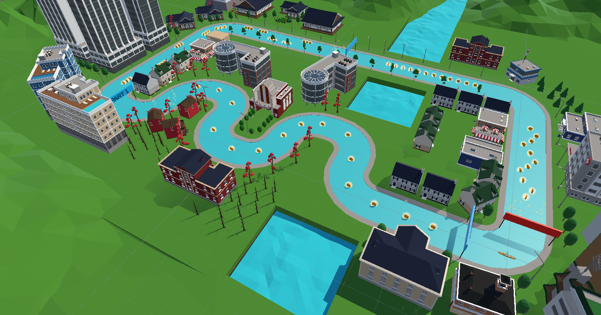
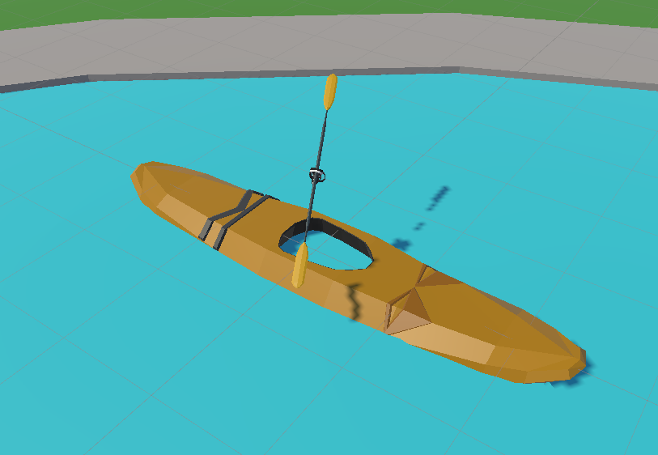

2. Parkour
The original parkour was modified to fit the kayaking experience.
In order to do this the parkour was flattened and coins were moved to a height where they could be reached with the boat. The road surface was replaced with water and the sidewalk was given an invisible collision wall to prevent the player from straying off course. 
The player character is attached to a boat that moves through the water and the right controller was replaced with a paddle. 